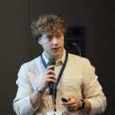

PhD Candidate · University of Padova
Neurorobotics & Brain-Machine Interface Researcher
Motor Imagery · CVSA · ROS2 · Deep Learning
My research sits at the intersection of neuroscience, robotics, and machine learning. At IASLab (UniPD), I develop real-time BCI systems based on Motor Imagery and Covert VisuoSpatial Attention — from building a collaborative framework where two users jointly control a robotic arm, to designing an attentional gating system that detects whether a subject is truly focused using a GMM. Currently visiting Lisbon to push BCI into Virtual Reality with VRStream. On the engineering side: C++/Python, ROS2, Docker, and a deep appreciation for reproducible, well-containerised pipelines.

Academic Path
Research & Engineering
Research Output
Toolbox
Beyond the Lab